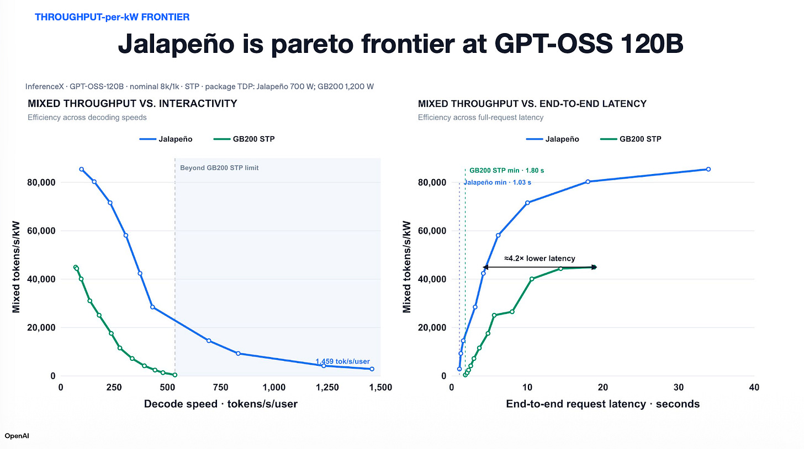
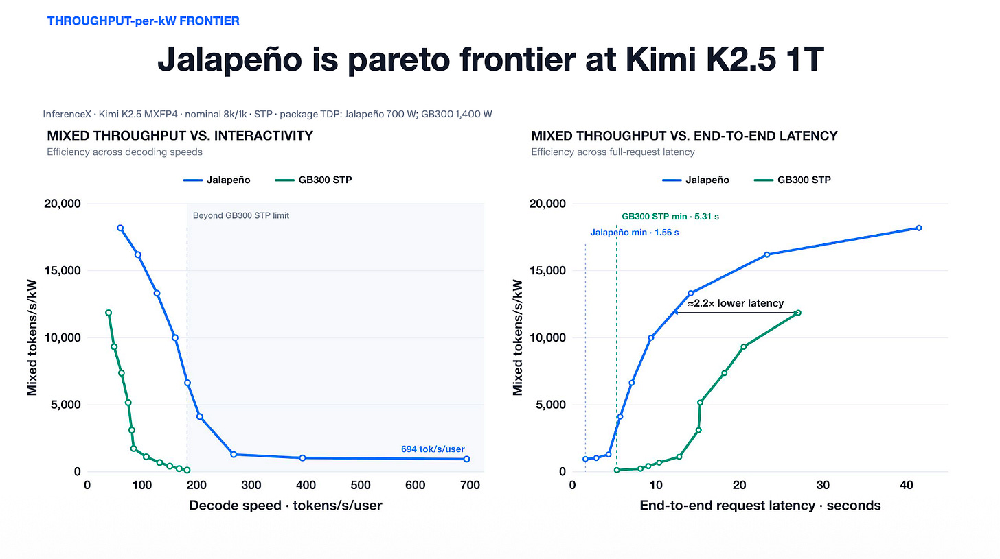
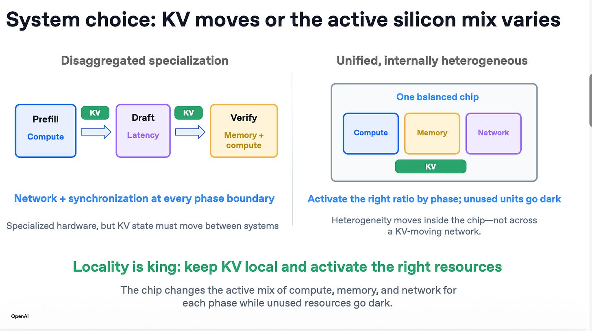
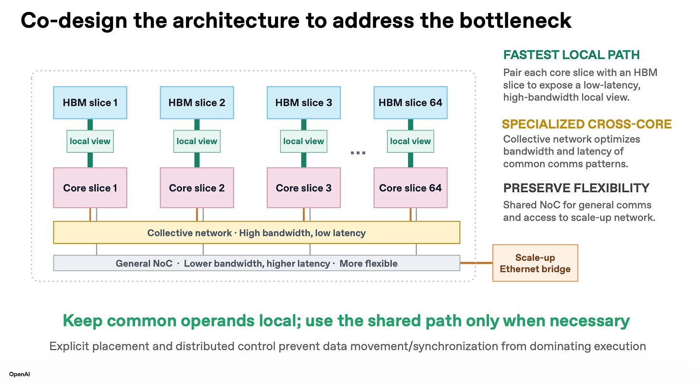
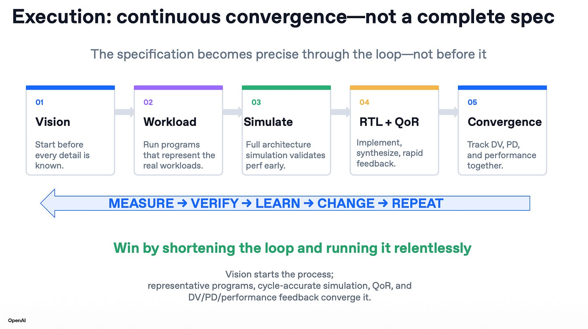

📝 编译自 Tae Kim（Key Context）· 2026-08-25 Hot Chips 大会 · OpenAI Jalapeño 展示
演讲人：Richard Ho（OpenAI 硬件副总裁）、Ravi Narayanaswami（技术成员）、Chris Leary（技术成员）。周二（2026年8月25日）在 Hot Chips 大会上发表。
以下是演讲中最关键的要点摘录：
Richard 领导 OpenAI 硬件团队，曾参与 Google TPU 团队；Ravi 在 Cruise 工作十年，也曾任职 Google；Chris 曾任 Google TPU 软件负责人。

Jalapeño 芯片来了，它是真的，我们实验室里已经跑起来了。这颗芯片让 OpenAI 能实现从模型、软件、编译器一路到硅片的全栈优化。我们基本上在九个月内完成了全部 RTL 实现。

之所以能这么快，是因为他们从一张白纸起步、全新设计，无需兼容任何旧架构或旧芯片。他们把精力集中在加速 OpenAI 的工作负载上——而这些工作负载正是大语言模型，因此所有 LLM 都因此受益。
只有两件事真正重要：用户等待多长时间，以及每个请求消耗多少能量。

每个用户接近每秒 1500 token。这曾是 SRAM 加速器的领域，但 HBM 根本不是瓶颈。右侧是我们今天以 4 倍更低延迟提供的最高吞吐。
世界需要又快又便宜。Jalapeño 两者兼备。

每个用户每秒 700 token，这明显是 SRAM 级别的领域。对当前最高吞吐有 5 倍更低的延迟。故事是相同的，只是优势变大了——模型越大，优势越大。

我们几乎没有花时间优化 Kimi，我想只花了几天的功夫。

项目启动时我们必须决定：是做一颗重度解码、超优化的芯片，还是一颗既擅长解码、也擅长 pre-fill 的芯片。我们选择了后者。选择单芯片方案的另一个理由是保持数据局部性。
纸面上的 FLOPS 并不重要，重要的是你在实际工作负载中真正交付给用户的 FLOPS。
这就引出了 Jalapeño 架构——一种内存分片（memory-sliced）架构。每个核心都对自己的 HBM 分片拥有本地视图。

这意味着全局内存子系统上不存在争用，但也意味着你必须仔细思考自己的工作负载该如何映射到这台机器上。
Jalapeño 的设计目标是通过把数据放在需要的地方、并在需要时到达，来降低等待时间。架构最小化了芯片空闲时间和数据移动，让数据贴近计算。它是针对 LLM 推理优化的。

我们实际构建的是一个专用的集合网络，让各核心能以高性能互相通信。同样，你必须规划好如何映射到机器上。但好处是它经过精心编排，能在你恰好需要时把那些值放进寄存器。

想造世界上最好的芯片、又想推进得飞快，只有两种选择：建一支很大的团队，或一支很小的团队。我们选了后者。我们项目过程中发现让这行得通的诀窍——也就是让你在开场看到的超快节奏的真正关键：能运转这套循环。你可以叫它敏捷，也可以叫它协同设计。

该团队引入了一种全新的硬件编程环境，OpenAI 的 AI 模型在这个环境里编写程序达到了极高的熟练度。
但借助 Sol、Astra 这类现代前沿大模型，它在为这种空间架构编写 kernel 上非常擅长。即便是我们专家调优过的 kernel，AI 也常常能再榨出一些额外性能。

我们想解锁的能力，是真正让它们服务于各种工作负载、交付性能和每瓦性能。因为归根结底，对端到端工作负载而言，唯一重要的事就是如何获得交付出来的每瓦性能。

这是多代路线图的第一步。第二代已经在顺利开发中，我们正朝着在数个月内流片（tapeout）推进。整个重点在于这一切都会降低基础设施成本，正如我开场时所说。我真心为团队感到骄傲。我还要特别感谢我们的合作伙伴 Broadcom 和 Celestica，他们是我们能在这里交付这一能力的关键伙伴。

Tae 点评：想了解 OpenAI 芯片对投资者的意义，可读他上周的 Hot Chips 大会关键要点总结。